préparation du système de vidéo surveillance pour l'hotel de Gaspard à GoumelInstallation à l'IPRESS de Ziguinchor
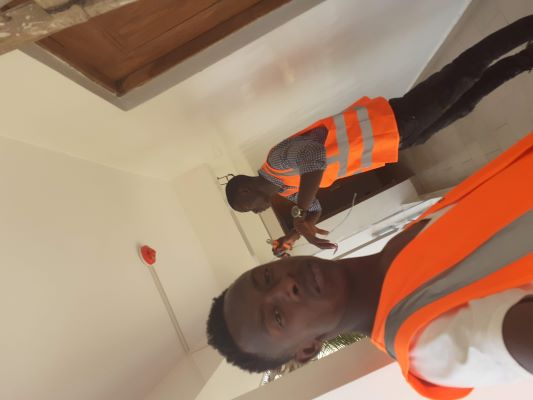
Paul et Oussmane installent les detecteurs de fumée pour l'hotel Perroquet
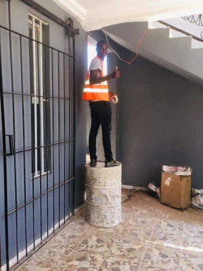
Installation du système de sécurité incendie au Bar/Restaurant Nawutaran de M.KANFANY
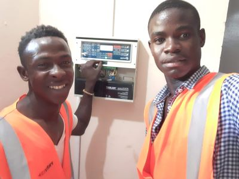
Centrale de l'hotel Perroquet montée et installéePharmacie élevageInstallation du système de vidéo surveillance chez un particulier à ZiguinchorInstallation du repartiteur de l'IPRESS
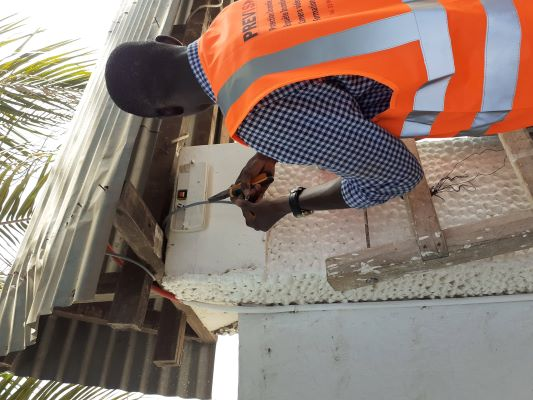
Paul devant l'hotel Perroquet
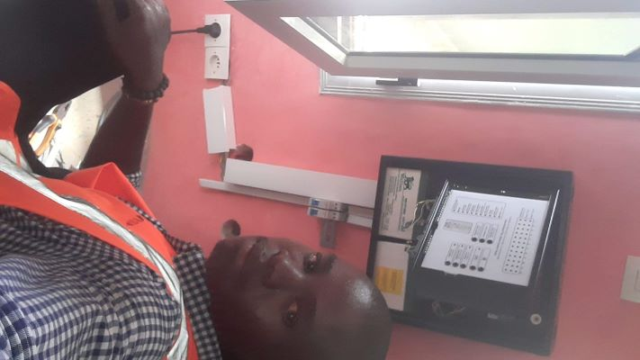
La centrale du Bar/Restaurant Nawutaran de M.KANFANY
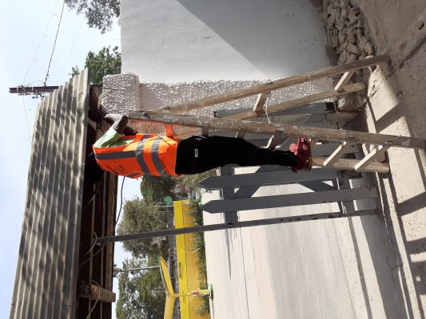
Oussmane devant l'hotel Perroquet
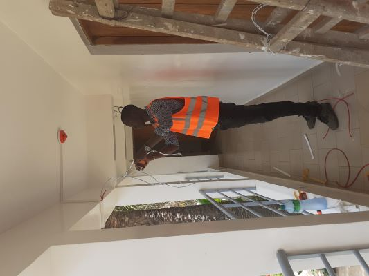
Installation du système de sécurité incendie à l'hotel Perroquet
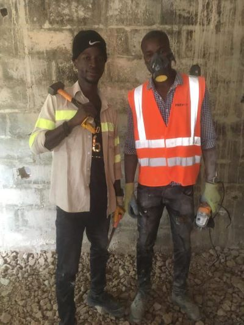
Installation électrique d'un batiment à Kandialang
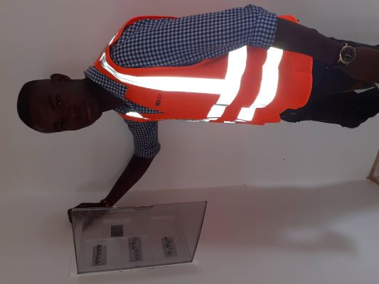
Paul devant le coffret électriqueInstallation du système de vidéo surveillance chez un particulier au Cap Skirring
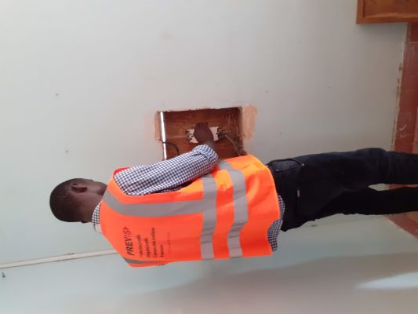
Maintenance d'un disjoncteur chez un particulier
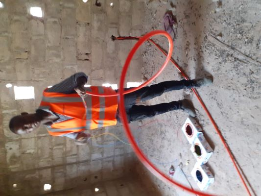
Installation domestique d'un baptiment
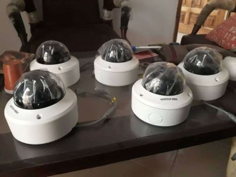
Caméras commandées pour l'hotel de Gaspard à GoumelTest de vue éxterieur avec une caméra
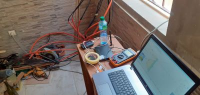
En plein travail chez Gaspard
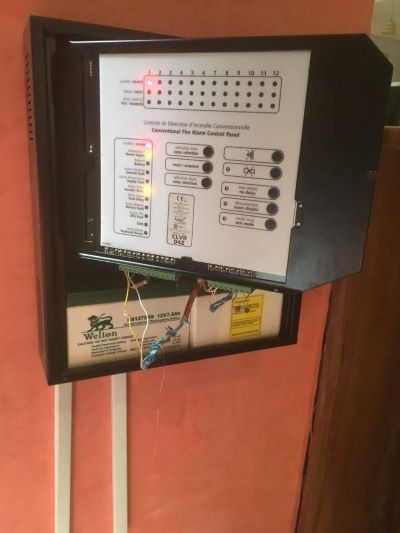
Centrale du Bar/Restaurant Nawutaran
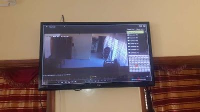
Ecran de control des caméras
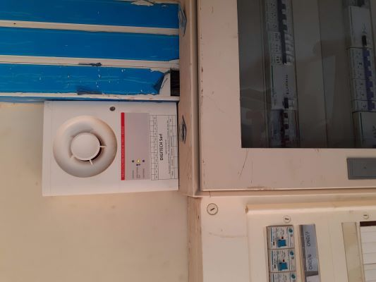
Boitier d'alarme à l'IPRESS de Ziguinchor
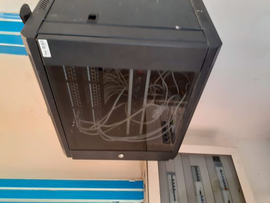
Repartiteur des caméras de l'IPRESS de Ziguinchor
Maintenance du système de vidéo surveillance de l'IPRESS de Ziguinchor
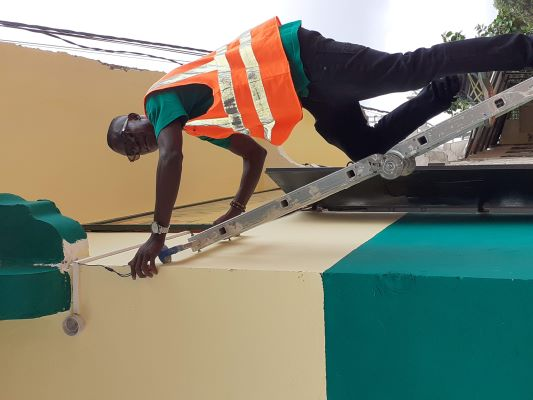
Installation du système de vidéo surveillance à la pharmacie élevage près de l'université Assane SECK de ZiguinchorInstallation du système de vidéo surveillance pour l'hotel de Gaspard à Goumel
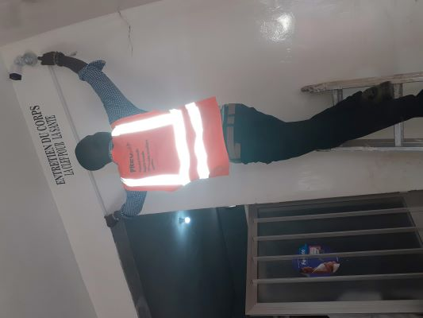
Paul à la pharmacie élevage
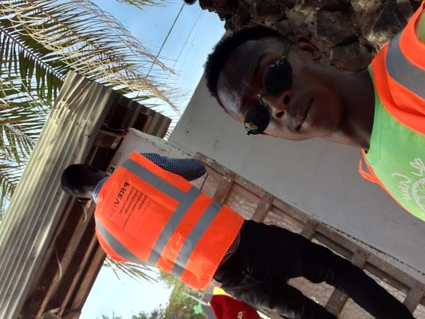
Paul et Oussmane devant l'hotel PerroquetInstallation du déclencheur manuel chez Gaspard
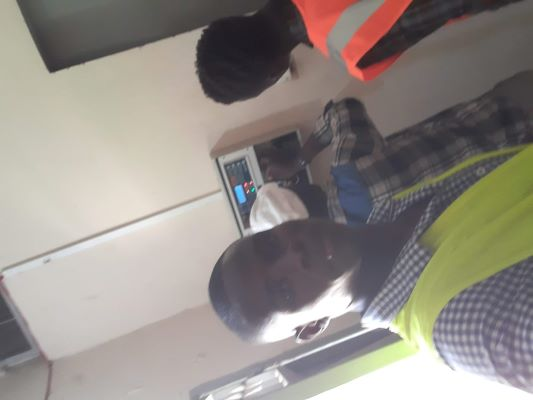
Paul, Oussmane et leur associé Diène à l'hotel Perroquet
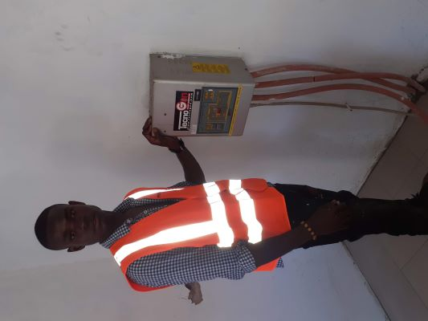
Système d'auto-maintient du groupe éléctrogène de l'hotel Perroquet
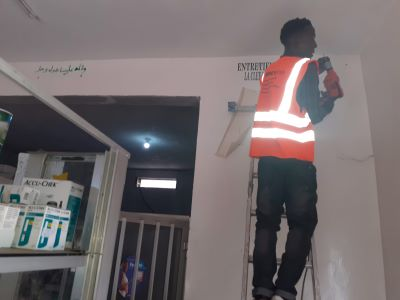
Oussmane à la pharmacie élevage
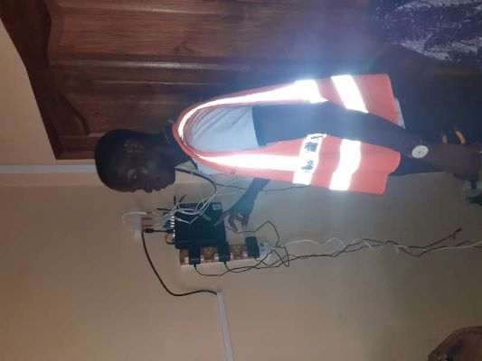
Installation du système de vidéo surveillance chez un particulier à Lyndiane, Mme Mané
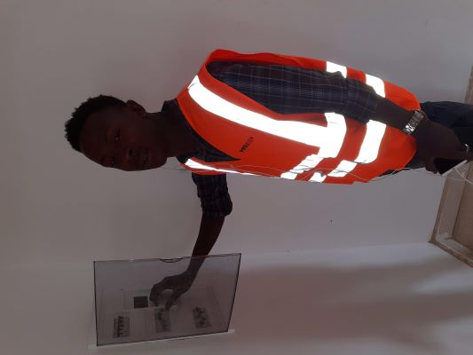
Vérification du coffret électrique
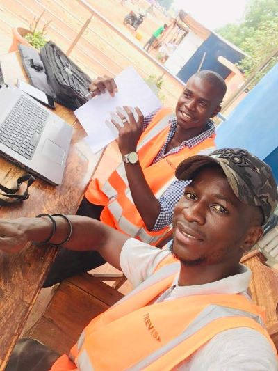
Paul et Khalifa revoient les contratsPose de déclencheurs manuelMaintenance du coffret électrique de l'IPRESS de ZiguinchorInstallation domestique d'un baptimentChantier de l'IPRESS de Ziguinchor
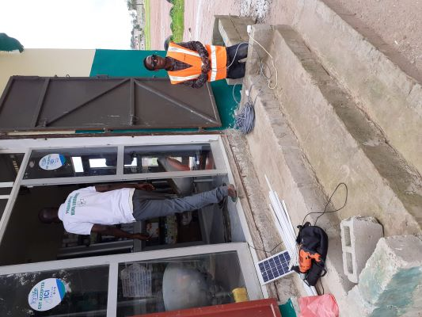
Pharmacie élevage proche de l'université Assane SECK
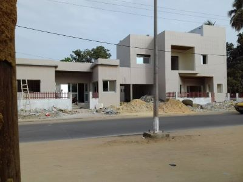
L'IPRESS en constructionDevant l'hotel de Gaspard à Goumel
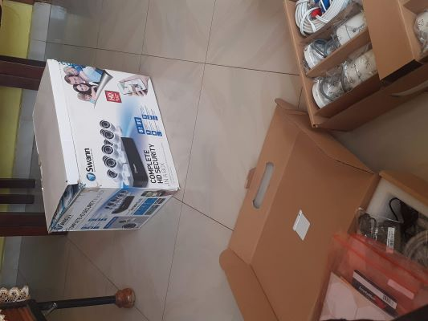
Commande de caméra pour un particulier
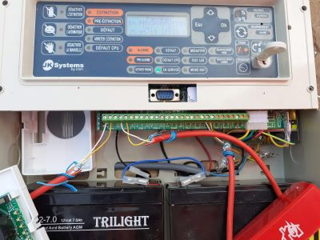
Centrale de l'hotel Perroquet
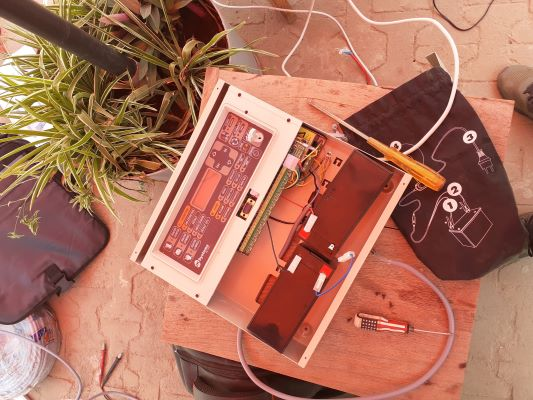
Préparation de la centrale de l'hotel PerroquetConfiguration d'un logiciel de vidéo surveillance
.jpeg)

.jpeg)
.jpeg)
.jpeg)
.jpeg)


.jpeg)


.jpeg)
.jpeg)

.jpeg)